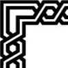

Бериллий — это элемент главной подгруппы второй группы, второго периода периодической системы химических элеметнов Д. И. Менделеева, с атомным номером 4. Обозначается символом Ве (лат. Beryllium). Высокотоксичный элемент. Простое вещество бериллий — относительно твервый металл светло–серого цвета.